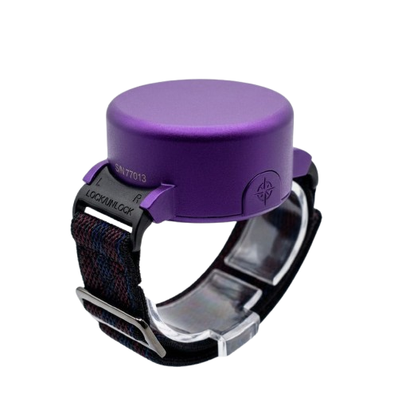
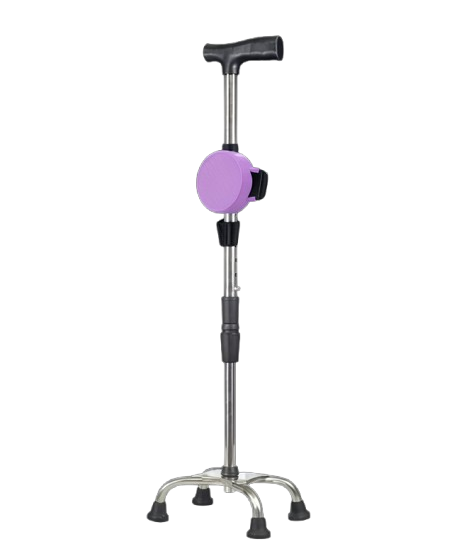
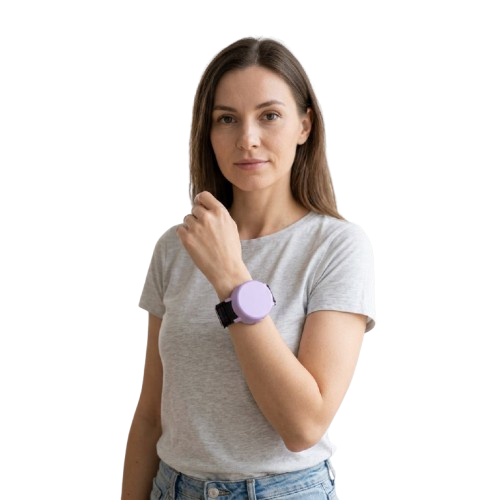
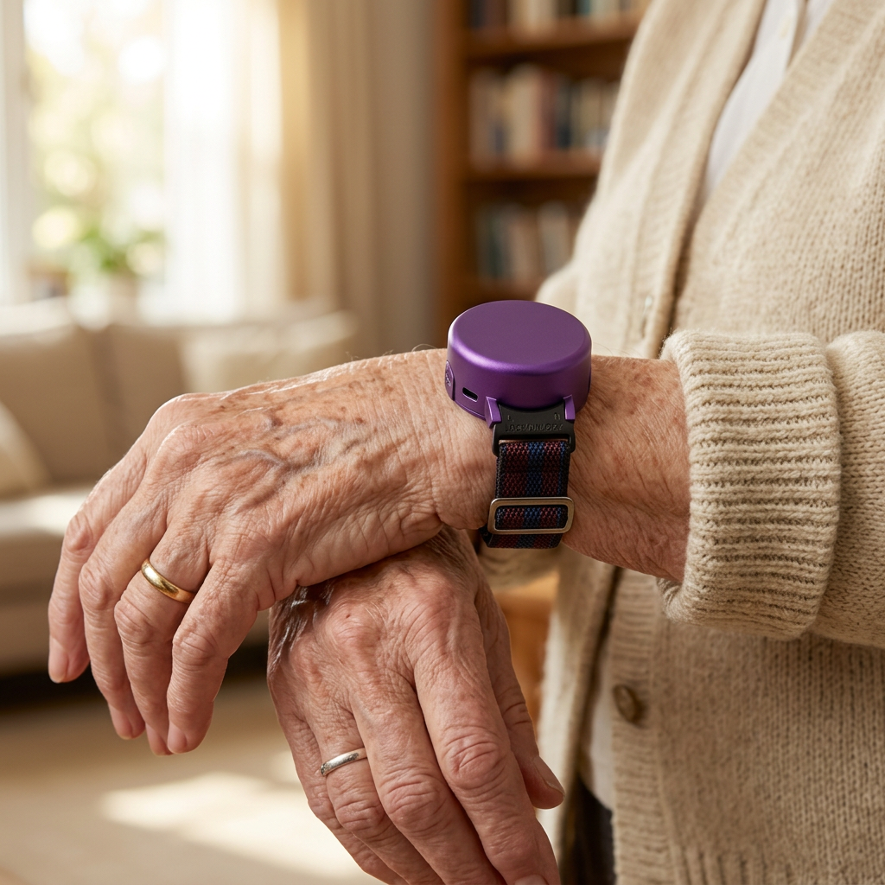
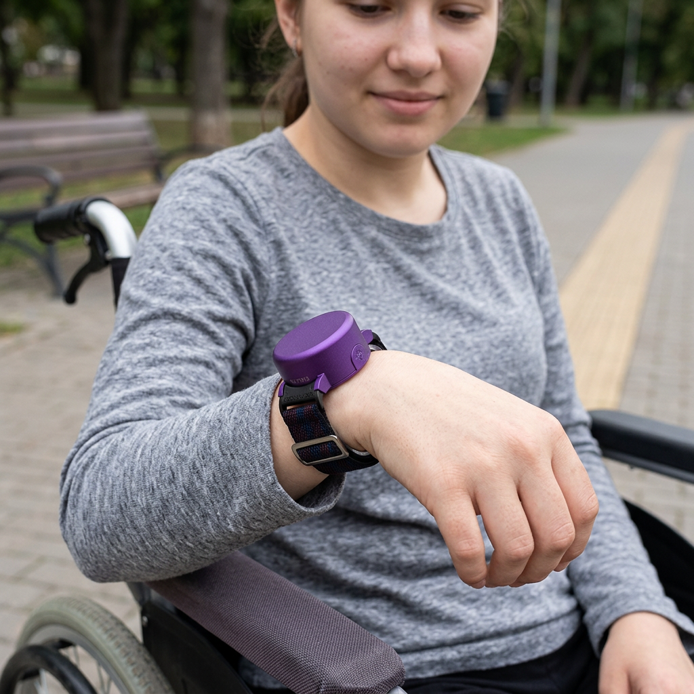

Tecnología inteligente que reconoce una caída en segundos y avisa a quien cuida de ti, incluso cuando no puedes pedir ayuda tú mismo.



SafeStep identifica los movimientos de una caída y envía una alerta directa a la aplicación, sin que nadie tenga que hacer nada más.
Identifica patrones de movimiento asociados a una posible caída, en tiempo real.
Envía una alerta a la app SafeStep en el momento en que se detecta una caída.
Usa un modelo entrenado con Edge Impulse para analizar el movimiento del dispositivo.
Batería Li-Po de 250 mAh con carga mediante módulo TP4056.


SafeStep no es un solo dispositivo — es un sistema que se integra donde ya se apoya la persona.